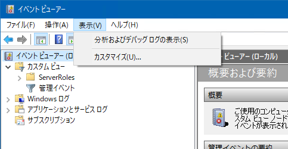
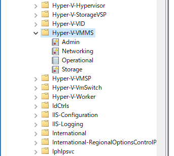
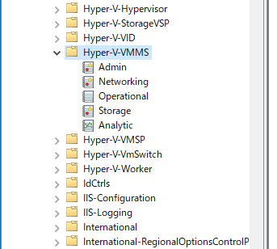
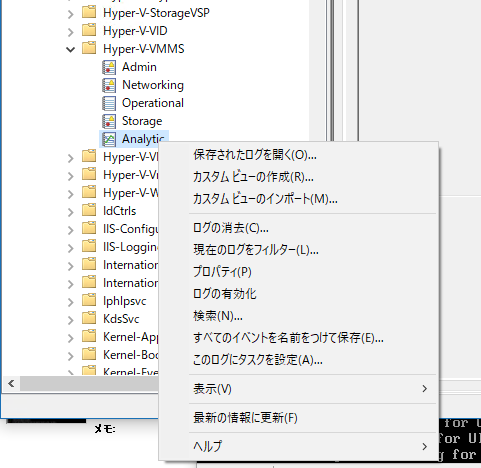
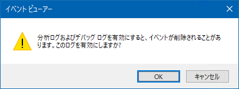

Introduction
Fedora 28をHyper-Vにインストールしようとするもインストール画面が起動しない問題に遭遇。 解決はできていないが、有用なログを取得する手順を見つけたのでメモ。
Resolution
下記のMicrosoft Technetの掲示板から。
手順は、
- 実行中の仮想マシンを停止
- Hyper-V Managerをすべて閉じる
- VMMSサービス (Hyper-V Virtual Machine Management サービス)を停止 (net stop vmms)
- VMMSとWorkerの解析ログを有効
- Hyper-V ManagerとVMConnectのUIトレーシングを有効化
- VMMSサービス (Hyper-V Virtual Machine Management サービス)を開始 (net start vmms)
- Hyper-V Managerを開く
- 仮想マシンを起動
- 仮想マシンに接続
- ログを収集
- ログ収集を中止
各手順における詳細なステップは次。
VMMSとWorkerの解析ログを有効
イベントビューアを開いて、メニューの表示(V)**から分析及びデバッグ ログの表示(S)を有効にします。

次に、アプリケーションとサービスログ、Microsoft、Windows、Hyper-V-VMMSと進みます。 すると、Analytic**が追加されています。
{kind=link}

有効化前
{kind=link}

有効化後
{kind=link}
Analyticを右クリックし、ログの有効化をクリック。
 警告が出ますが気にせずOK。 
同じことをHyper-V-Workerにも行います。
{kind=link}
{kind=link}
Hyper-V ManagerとVMConnectのUIトレーシングを有効化
%appdata%\Microsoft\Windows\Hyper-V\Client\1.0\を開きます。 VMClientTrace.configというファイルを作成し、下記の内容を保存します。 [code lang=”xml”]
ログを収集
Hyper-V-VMMSとHyper-V-VMMSのAnalyticのログはそのままイベントビューアに表示されます。 UIトレーシングのログは、**%TEMP%**に収集されます。 下記のようなログが出力されます。
- VMConnect_Trace_20181028123045.log
- VMBrowser_Trace_20181028120328.log
ログ収集を中止
イベントビューアで、Hyper-V-VMMSとHyper-V-VMMSのAnalyticに対して、ログの無効化を行います。 UIトレーシングのログ収集の停止は、作成したVMClientTrace.configを削除することで停止できます。